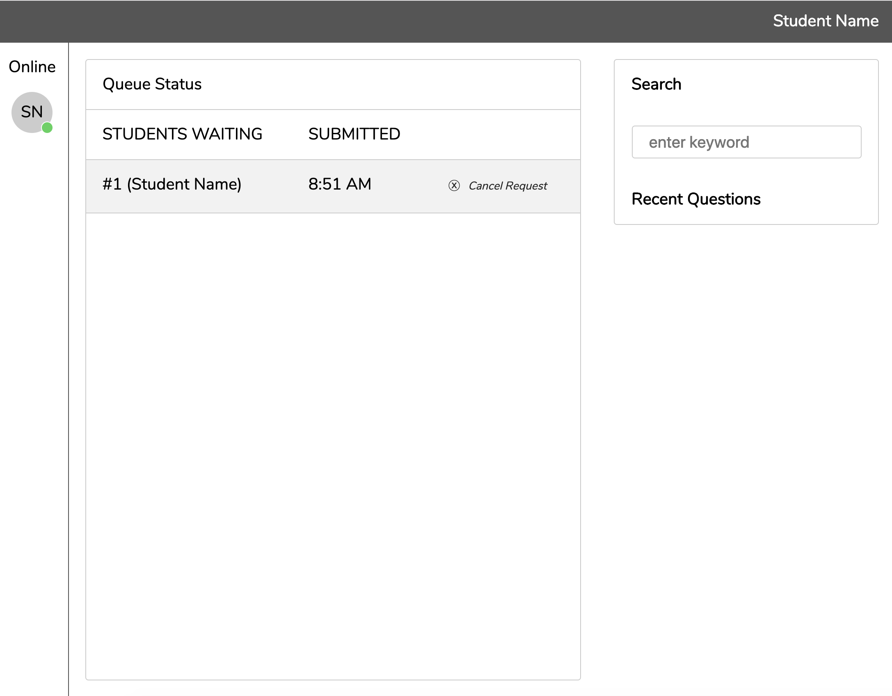

Hey there 👋
I'm Jonathan.
I'm a software developer 👨💻
Here are some of my projects.
But there's even more on my
Github.
Queue System

React, Typescript, Node, GraphQL, Postgres, Redis
Global Penpals
React, Typescript, Node, GraphQL, Postgres, Redis